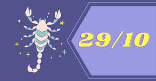
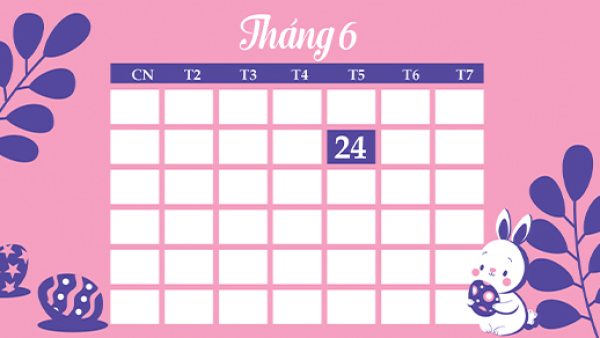

CÁC NGÀY ĐẶC BIỆT TRONG NĂM
Ngày 05/08 là ngày gì?
- Ngày 5/8/1964, Bộ tư lệnh Hải quân đánh trả thành công chiến dịch Mũi Tên Xuyên - cuộc tập kích bằng máy bay đầu tiên của Không quân Mỹ vào miền Bắc Việt Nam, ngày diễn ra chiến thắng vang dội này được chọn là Ngày truyền thống của Quân chủng Hải quân.
Ngày 26/06 là ngày gì?
- 26/6 là Ngày Quốc tế Phòng chống lạm dụng Ma túy và Buôn bán bất hợp pháp. Ngày 26/6/1988, một cuộc mít tinh do Ủy ban quốc tế về phòng chống ma túy tổ chức kéo dài trong hơn 2 giờ đã diễn ra tại trụ sở của Liên Hợp Quốc.
Ngày 29/10 là ngày gì?
- 29-10 là ngày mất của nhà chí sĩ yêu nước Phan Bội Châu. Ngày này năm 1945, Bác khẳng định tinh thần chiến đấu anh dũng là sức mạnh vô địch chiến thắng mọi kẻ thù.
Ngày 24/06 là ngày gì?
- Trong tử vi cho thấy rằng ngày 24/6/2021 tức ngày 15 Âm lịch (ngày Quý Mão) nên là ngày tốt với những người tuổi Mùi, Hợi nhưng lại được đánh giá là ngày xấu cho những người tuổi Tý, Ngọ, Dậu.